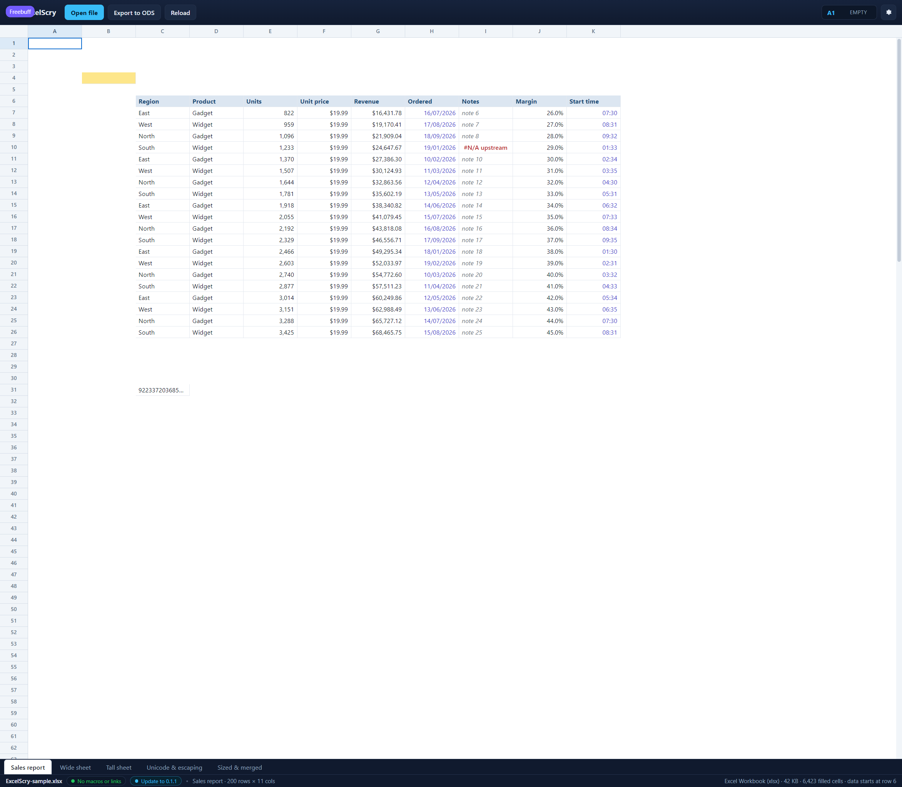

<!doctype html>
<meta charset="utf-8">
<title>ExcelScry — a sheet's own text weight, colours and fills</title>
<style>
  body { margin: 0; background: #1b1d22; color: #c9cdd6;
         font: 14px/1.5 Segoe UI, system-ui, sans-serif; }
  figure { margin: 0; }
  img { display: block; width: 100%; height: auto; }
  figcaption { padding: 12px 16px; }
  code { color: #8fd3ff; }
</style>
<figure>
  
  <figcaption>
    A report whose styling comes from the workbook rather than from the grid.
    The header row is bold, dark blue on a pale blue fill; the <code>Notes</code>
    column is italic grey; and <code>B4</code> is a cell with a fill and no
    value, which is still drawn. The grid keeps its own alignment and its
    semantic colours for values the file gives no colour of their own, and the
    same look is carried into the frozen panes. (Shown in the UI harness, which
    serves this front end against mocked rows carrying
    <code>bold</code>, <code>italic</code>, <code>color</code> and
    <code>background</code>.)
  </figcaption>
</figure>
